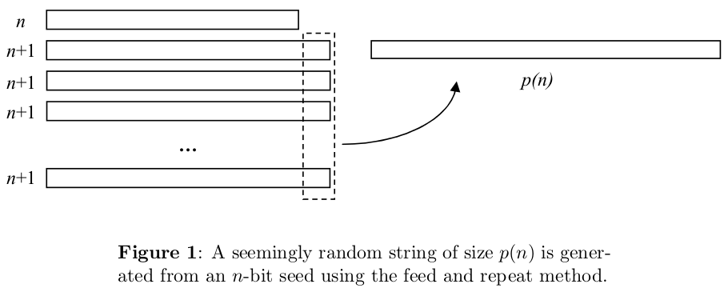

Fuentes:
Cryptography is a 3,000-year old black art that has been completely transformed over the last few decades by ideas from theoretical computer science. Cryptography is perhaps the best example of a field in which the concepts of theoretical computer science have real practical applications: problems are designed to be hard, the worst case assumptions are the right assumptions, and computationally intractable problems are there because we put them there.
For more on the history of cryptography, a great reference is David Kahn’s The Codebreakers, which was written before people even knew about the biggest cryptographic story of all: the breaking of the German naval code in World War II, by Alan Turing and others.
Our journey through the history of cryptography begins with the famous and pathetic "Caesar cipher" used by the Roman Empire. Here the plaintext message is converted into a ciphertext by simply adding 3 to each letter, wrapping around to A after you reach Z. Thus D becomes G, Y becomes B, and DEMOCRITUS becomes GHPRFULWXV. More complex variants of the Caesar cipher have appeared, but given enough ciphertext they're all easy to crack, by using (for example) a frequency analysis of the letters appearing in the ciphertext. Not that that's stopped people from using these things! Indeed, as recently as last April, the head of the Sicilian mafia was finally caught after forty years because he used the Caesar cipher -- the original one -- to send messages to his subordinates!
It was not until the 1920’s that a “serious” cryptosystem was devised. Gilbert Sandford Vernam, an American businessman, proposed what is known today as the one-time pad.
Under the one-time pad cryptosystem, the plaintext message is represented by a binary string M which is them XOR-ed with a random binary key, K, of the same length. Then the ciphertext C is equal to the bitwise sum of M and K, mod 2.
Assuming that the recipient is a trusted party who shares the knowledge of the key, the cipher- text can be decrypted by performing another XOR operation: C ⊕ K = M ⊕ K ⊕ K = M .
To an eavesdropper who does not have knowledge of the key, the ciphertext appears to be non- sense since XOR-ing any string of bits with a random string just produces another random string. There is no way to guess what the ciphertext may be encoding because any binary key could have been used.
As a result of this, the one-time pad is a provably unbreakable cryptographic encoding, but only if used correctly. The problem with using the one-time pad is that it literally is a “one- time” encryption. If the same key is ever used to encrypt more than one message, then the cryptosystem is no longer secure. For example, if we sent another message M2 encrypted with the same key K to produce C2 , the eavesdropper could obtain a combination of the messages: C1 ⊕ C2 M1 ⊕ K ⊕ M2 ⊕ K = M1 ⊕ M2 . If the eavesdropper had any idea of what either of the messages may have contained, the eavesdropper could learn about the other plaintext message, and indeed obtain the key K.
As a concrete example, Soviet spies during the Cold War used the one-time pad to encrypt their messages and occasionally slipped up and re-used keys. As a result, the NSA, through its VENONA project, was able to decipher some of the ciphertext and even gather enough information to catch Julius and Ethel Rosenberg.
The one-time pad has the severe shortcoming that the number of messages that can be encrypted is limited by the amount of key available.
Is it possible to have a cryptographic code which is unbreakable (in the same absolute sense that the one-time pad is unbreakable), yet uses a key that is much smaller than the message?
In the 1940s, Claude Shannon proved that a perfectly secure cryptographic code requires the encryption key to be at least as long as the message that is sent.
Here's his proof: given the ciphertext and the key, the plaintext had better be uniquely recoverable. In other words, for any fixed key, the function that maps plaintexts to ciphertexts had better be an injective function.
But this immediately implies that, for a given ciphertext c, the number of plaintexts that could possibly have produced c is at most the number of keys. In other words, if there are fewer possible keys than plaintexts, then an eavesdropper will be able to rule out some of the plaintexts -- the ones that wouldn't encrypt to c for any value of the key.
Therefore our cryptosystem won't be perfectly secure. It follows that, if we want perfect security, then we need at least as many keys as plaintexts -- or equivalently, the key needs to have at least as many bits as the plaintext.
The key loophole in Shannon’s argument is the assumption that the adversary has unlimited computational power. For a practical cryptosystem, we can exploit computational complexity theory, and in particular the assumption that the adversary is a polynomial-time Turning machine that does not have unlimited computational power.
A pseudorandom generator (PRG) is a function that takes as input a short, truly random string (called the seed) and produces as output a long, seemingly random string.
In most programming languages, if you ask for random numbers you get something like the following (with a, b, and N integers):
x1 = a ⋅ x0 + b mod N
x2 = a ⋅ x1 + b mod N
…
xn = a ⋅ xn − 1 + b mod N
This is good enough for many non-cryptographic applications, but an adversary could distinguish the sequence x0 , x1 , … from random by solving a small system of equations modulo N.
For cryptography applications, it must not be possible for an adversary to figure out a pattern in the output of the generator in polynomial time. Otherwise, the system is not secure.
Definition (Yao 1982) A CPRG is a function f such that:
Ie, it decreases faster than 1/q(n) for any polynomial q.
No polynomial-time adversary can distinguish the output of f from a truly random string with any non-negligible bias.
How "stretchy" a PRG are we looking for? Do we want to stretch an n-bit seed to 2n bits? To n2 bits? n100 bits? The answer turns out to be irrelevant!
Why? Because even if we only had a PRG f that stretched n bits to n+1 bits, we could keep applying f recursively to its own output, and thereby stretch n bits to p(n) bits for any polynomial p. Furthermore, if the output of this recursive process were efficiently distinguishable from a random p(n)-bit string, then the output of f itself would have been efficiently distinguishable from a random (n+1)-bit string -- contrary to assumption! Of course, there's something that needs to be proved here, but the something that needs to be proved can be proved, and I'll leave it at that.
if pseudorandom generators exist, then it's possible to build a computationally-secure cryptosystem using only short encryption keys.
First use the PRG to stretch a short encryption key to a long one -- as long as the plaintext message itself. Then pretend that the long key is truly random, and use it exactly as you'd use a one-time pad!
Sure, we could do wonderful things if we had a PRG -- but is there any reason to suppose PRG's actually exist?
A first, trivial observation is that PRG's can only exist if P≠NP. Why?
Because if P=NP, then given a supposedly random string y, we can decide in polynomial time whether there's a short seed x such that f(x)=y. If y is random, then such a seed almost certainly won't exist -- so if it does exist, we can be almost certain that y isn't random. We can therefore distinguish the output of f from true randomness.
Suppose we do assume P≠NP. What are some concrete examples of functions that are believed to be pseudorandom generators?
One example is what's called the Blum-Blum-Shub generator. Here's how it works: pick a large composite number N. Then the seed, x, will be a random element of ZN. The output consists of the last bit of x2 mod N, the last bit of (x2)2 mod N, the last bit of ((x2)2)2 mod N, etc. and output that as your pseudorandom string f(x).

Blum et al. show that, if we had a polynomial-time algorithm to distinguish f(x) from a random string, then we could use that algorithm to factor N in polynomial time. Equivalently, if factoring is hard, then Blum-Blum-Shub is a PRG.
Alas, we don't think factoring is hard -- at least, not in a world with quantum computers!
So can we base the security of PRG's on a more quantum-safe assumption? Yes, we can. There are many, many ways to build a candidate PRG, and we have no reason to think that quantum computers will be able to break all of them.
Indeed, you could even base a candidate PRG on the apparent unpredictability of (say) the "Rule 110" cellular automaton, as advocated by Stephen Wolfram in his groundbreaking, revolutionary, paradigm-smashing book.
Ideally, we would like to construct a CPRG or cryptosystem whose security was based on an NP-complete problem. Unfortunately, NP-complete problems are always about the worst case. In cryptography, this would translate to a statement like “there exists a message that’s hard to decode”, which is not a good guarantee for a cryptographic system! A message should be hard to decrypt with overwhelming probability.
Despite decades of effort, no way has yet been discovered to relate worst case to average case for NP-complete problems. And this is why, if we want computationally-secure cryptosystems, we need to make stronger assumptions than P ≠ NP.
That's not to say, though, that we know nothing about average-case hardness.
As an example, consider the Shortest Vector Problem (SVP): we're given a lattice L in Rn, consisting of all integer linear combinations of some given vectors v1, ..., vn in Rn. Then the problem is to approximate the length of the shortest nonzero vector in L to within some multiplicative factor k.
SVP is one of the few problems for which we can prove a worst-case / average-case equivalence (that is, the average case is every bit as hard as the worst case).
Based on that equivalence, Ajtai, Dwork, Regev, and others have constructed cryptosystems and pseudorandom generators whose security rests on the worst-case hardness of SVP. Unfortunately, the same properties that let us prove worst-case / average-case equivalence also make it unlikely that SVP is NP-complete for the relevant values of k! It seems more likely that SVP is intermediate between P and NP-complete, just like we think factoring is.
Suppose we just assume NP-complete problems are hard on average.
Even then, there's a further difficulty in using NP-complete problems to build a PRG. This is that breaking PRG's just doesn't seem to have the right "shape" to be NP-complete:
Think about how we prove a problem B is NP-complete: we take some problem A that's already known to be NP-complete, and we give a polynomial-time reduction that maps yes-instances of A to yes-instances of B, and no-instances of A to no-instances of B. In the case of breaking a PRG, presumably the yes-instances would be pseudorandom strings and the no-instances would be truly random strings (or maybe vice versa).
So the problem is: How do we describe a "truly random string" for the purpose of mapping to it in the reduction? The whole point of a string being random is that we can't describe it by anything shorter than itself!
(Admittedly, this argument may not work since the reduction might be randomized.)
Nevertheless, it is possible to conclude something from the argument: that if breaking PRG's is NP-complete, then the proof will have to be very different from the sort of NP-completeness proofs that we're used to.
One-way functions are the cousins of pseudorandom generators. Intuitively, a one-way function (OWF) is just a function that's easy to compute but hard to invert. More formally, a function f from n bits to p(n) bits is a one way function if
With this definition, we consider algorithms A that find anything in the preimage of f(x), not just x itself.
The existence of PRG's implies the existence of OWF's.
Because a PRG is an OWF!
Alright then, can anyone prove that the existence of OWF's implies the existence of PRG's?
This one's a little harder! The main reason is that the output of an OWF f doesn't have to appear random in order for f to be hard to invert.
And indeed, it took more than a decade of work -- culminating in a behemoth 1997 paper of Håstad, Impagliazzo, Levin, and Luby -- to figure out how to construct a pseudorandom generator from any one-way function.
Because of Håstad et al.'s result, we now know that OWF's exist if and only if PRG's do.
The proof is pretty complicated, and the reduction is not exactly practical: the blowup is by about n40. This is the sort of thing that gives polynomial-time a bad name -- but it's the exception, not the rule!
So far we've restricted ourselves to private-key cryptosystems, which take for granted that the sender and receiver share a secret key.
But how would you share a secret key with (say) Amazon.com before sending them your credit card number? Would you email them the key? Oops -- if you did that, then you'd better encrypt your email using another secret key, and so on ad infinitum! The solution, of course, is to meet with an Amazon employee in an abandoned garage at midnight.
No, wait ... I meant that the solution is public-key cryptography.
The first inventors of public-key cryptography were Ellis, Cocks, and Williamson, working for the GCHQ (the British NSA) in the early 70's. Of course they couldn't publish their work, so today they don't get much credit! Let that be a lesson to you.
The first public public-key cryptosystem was that of Diffie and Hellman, in 1976. A couple years later, Rivest, Shamir, and Adleman discovered the famous RSA system that bears their initials.
RSA had several advantages over Diffie-Hellman: for example, it only required one party to generate a public key instead of both, and it let users authenticate themselves in addition to communicating in private. But if you read Diffie and Hellman's paper, pretty much all the main ideas are there.
The core of any public-key cryptosystem is what's called a trapdoor one-way function. This is a function that's
The first two requirements are just the same as for ordinary OWF's. The third requirement -- that the OWF should have a "trapdoor" that makes the inversion problem easy -- is the new one. For comparison, notice that the existence of ordinary one-way functions implies the existence of secure private-key cryptosystems, whereas the existence of trapdoor one-way functions implies the existence of secure public-key cryptosystems.
Let's say you want to send your credit card number to Amazon.com. What happens?
First Amazon randomly selects two large prime numbers p and q (which can be done in polynomial time), such that (p-1) and (q-1) should not be divisible by 3.
Then Amazon computes the product N = pq and publishes it for all the world to see, while keeping p and q themselves a closely-guarded secret.
Now, assume your credit card number is encoded as a positive integer x, smaller but not too much smaller than N. Then what do you do? Simple: you compute x3 mod N and send it over to Amazon!
If a credit card thief intercepted your message en route, then she would have to recover x given only x3 mod N.
But computing cube roots modulo a composite number is believed to be an extremely hard problem, at least for classical computers! If p and q are both reasonably large (say 10,000 digits each), then any classical eavesdropper would need millions of years to recover x.
Now how does Amazon itself recover x?
By using its knowledge of p and q! We know from our friend Mr. Euler, way back in 1761, that the sequence
x mod N, x2 mod N, x3 mod N, …
repeats with period (p-1)(q-1). So provided Amazon can find an integer k such that
3k = 1 mod (p − 1)(q − 1)
it'll then have
(x3)k mod N = x3k mod N = x mod N
Now, we know that such a k exists, by the assumption that p-1 and q-1 are not divisible by 3.
Furthermore, Amazon can find such a k in polynomial time, using Euclid's algorithm (from way way back, around 300BC). Finally, given x3 mod N, Amazon can compute (x3)k in polynomial time by using a simple repeated squaring trick. So that's RSA.
Of course, if the credit card thief could factor N into pq, then she could run the exact same decoding algorithm that Amazon runs, and thereby recover the message x.
So the whole scheme relies crucially on the assumption that factoring is hard! This immediately implies that RSA could be broken by a credit card thief with a quantum computer.
Classically, however, the best known factoring algorithm is the Number Field Sieve, which takes about 2n1/3 steps.
As a side note, no one has yet proved that breaking RSA requires factoring: it's possible that there's a more direct way to recover the message x, one that doesn't entail learning p and q.
On the other hand, in 1979 Rabin discovered a variant of RSA for which recovering the plaintext is provably as hard as factoring.
The operation x3 mod N in RSA is an example of what’s called trapdoor one way function, or TDOWF. A trapdoor one-way function is a one-way function with the additional property that if you know some secret “trapdoor” information then you can efficiently invert it. So for example, the function f(x) = x3modN is believed to be a one-way function, yet is easy to invert by someone who knows the prime factors of N .
Are there any candidate TDOWF’s not based on modular arithmetic (like RSA is)?
One class that’s been the subject of much recent research is based on lattices. (Strictly peaking, the objects in this class are not TDOWF’s, but something called lossy TDOWF’s, but they still suffice for public-key encryption.) Part of the motivation for studying this class is that the cryptosystems based on modular arithmetic could all be broken by a quantum computer, if we had one. By contrast, even with a quantum computer we don’t yet know how to break lattice cryptosystems. Right now, however, lattice cryptosystems are not used much. Part of the problem is that, while the message and key lengths are polynomial in n, there are large polynomial blowups. Thus, these cryptosystems aren’t considered to be as practical as RSA. On the other hand, in recent years people have come up with better constructions, so it’s becoming more practical.
There’s also a third class of public-key cryptosystems based on elliptic curves, and elliptic-curve cryptography is currently practical. Like RSA, elliptic-curve cryptography is based on abelian groups, and like RSA it can be broken by a quantum computer. However, elliptic-curve cryptogra- phy has certain nice properties that are not known to be shared by RSA.
In summary, we only know of a few classes of candidate TDOWF’s, and all of them are based on some sort of interesting math. When you ask for a trapdoor that makes your one-way function easy to invert again, you’re really asking for something mathematically special. It almost seems like an accident that plausible candidates exist at all! By contrast, if you just want an ordinary, non-trapdoor OWF, then as far as we know, all sorts of “generic” computational processes that scramble up the input will work.
A famous paper by Impagliazzo discusses five possible worlds of computational complexity and cryp- tography, corresponding to five different assumptions you can make. You don’t need to remember the names of the worlds, but I thought you might enjoy seeing them.
Algorithmica - P = NP or at the least fast probabalistic algorithms exist to solve all NP problems.
Heuristica - P ≠ NP , but while NP problems are hard in the worst case, they are easy on average.
Pessiland - NP-complete problems are hard on average but one-way functions don’t exist, hence no cryptography
Minicrypt - One-way functions exist (hence private-key cryptography, pseudorandom number generators, etc.), but there’s no public-key cryptography
Cryptomania - Public-key cryptography exists; there are TDOWF’s
The reigning belief is that we live in Cryptomania, or at the very least in Minicrypt.
Besides encrypting a message, can you prove that a message actually came from you? Think back to the one-time pad, the first decent cryptosystem we saw.
On its face, the one-time pad seems to provide authentication as a side benefit. Recall that this system involves you and a friend sharing a secret key k, you transmitting a message x securely by sending y = x ⊕ k, and your friend decoding the message by computing x = y ⊕ k. Your friend might reason as follows: if it was anyone other than you who sent the message, then why would y ⊕ k yield an intelligible message as opposed to gobbledygook?
There are some holes in this argument (see if you can spot any), but the basic idea is sound. However, to accomplish this sort of authentication, you do need the other person to share a secret with you, in this case the key. It’s like a secret handshake of fraternity brothers.
Going with the analogy of private vs. public key cryptography, we can ask whether there’s such a thing public-key authentication. That is, if a person trusts that some public key N came from you, he or she should be able to trust any further message that you send as also coming from you. As a side benefit, RSA gives you this ability to authenticate yourself, but we won’t go into the details.
Once you have cryptographic primitives like the RSA function, there are all sorts of games you can play. Take, for instance, the problem of Alice and Bob wanting to find out if they’re both interested in dating each other.
Being shy computer scientists, however, they should only find out they like each other if they’re both interested; if one of them is not interested, then that one shouldn’t be able to find out the other is interested.
An obvious solution (sometimes used in practice) would be to bring in a trusted mutual friend, Carl, but then Alice and Bob wold have to trust Carl not to spill the beans. Apparently there are websites out there that give this sort of functionality. However, ideally we would like to not have to rely on a third party.
So let’s suppose Alice and Bob are at their computers, just sending messages back and forth. If we make no assumptions about computational complexity, then the dating task is clearly impossible.
Why? Intuitively it’s “obvious”: because eventually one of them will have to say something, without yet knowing whether his or her interest will be reciprocated or not! And indeed one can make this intuitive argument more formal.
So we’re going to need a cryptographic assumption. In particular, let’s assume RSA is secure. Let’s also assume, for the time being, that Alice and Bob are what the cryptographers call honest but curious. In other words, we’ll assume that they can both be trusted to follow the protocol correctly, but that they’ll also try to gain as much information as possible from whatever messages they see. Later we’ll see how to remove the honest-but-curious assumption, to get a protocol that’s valid even if one player is trying to cheat.
Before we give the protocol, three further remarks might be in order. First, the very fact that Alice and Bob are carrying out a dating protocol in the first place, might be seen as prima facie evidence that they’re interested! So you should imagine, if it helps, that Alice and Bob are at a singles party where every pair of people has to carry out the protocol.
Second, it’s an unavoidable feature of any protocol that if one player is interested and the other one isn’t, then the one who’s interested will learn that the other one isn’t. (Why?)
Third, it’s also unavoidable that one player could pretend to be interested, and then after learning of the other player’s interest, say “ha ha! I wasn’t serious. Just wanted to know if you were interested.”
In other words, we can’t ask cryptography to solve the problem of heartbreak, or of people being jerks. All we can ask it to do is ensure that each player can’t learn whether the other player has stated an interest in them, without stating interest themselves.
Without further ado, then, here’s how Alice and Bob can solve the dating problem:
Alice goes through the standard procedure of picking two huge primes, p and q, such that p − 1 and q − 1 are not divisible by 3, and then taking N = pq. She keeps p and q secret, but sends Bob N together with x3modN and y3modN for some x and y. If she’s not interested, then x and y are both 0 with random garbage padded onto them. If she is interested, then x is again 0 with random garbage, but y is 1 with random garbage.
Assuming RSA is secure, Bob (not knowing the prime factors of N ) doesn’t know how to take cube roots mod N efficiently, so x3modN and y3modN both look completely random to him. Bob does the following: he first picks a random integer r from 0 to N − 1. Then, if he’s not interested in Alice, he sends her x3r3modN . If he is interested, he sends her y3r3modN .
Alice takes the cube root of whatever number Bob sent. If Bob wasn’t interested, this cube root will be xr mod N , while if he was interested it will be yr mod N . Either way, the outcome will look completely random to Alice, since she doesn’t know r (which was chosen randomly). She then sends the cube root back to Bob.
Since Bob knows r, he can divide out r. We see that if Bob was not interested, he simply gets x which reveals nothing about Alice’s interest. Otherwise he gets y which is 1 if and only if Alice is interested.
So there we have it. It seems that, at least in principle, computer scientists have solved the problem of flirting for shy people (assuming RSA is secure). This is truly nontrivial for computer scientists.
However, this is just one example of what’s called secure multiparty computation; a general theory to solve essentially all such problems was developed in the 1980’s. So for example: suppose two people want to find out who makes more money, but without either of them learning anything else about the other’s wealth. Or a group of friends want to know how much money they have in total, without any individual revealing her own amount. All of these problems, and many more, are known to be solvable cryptographically.